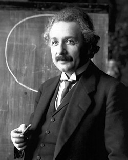

Albert Einstein
Scientist and Physicist
Albert Einstein was a theoretical physicist who is famously known for theory of relativity and the equation E=mc^2. He was born in Germany in 1879 on March 14 which is consider pi day. He was very smart, incredibly kind, always willing to help others. He was also a very curious person and loved to learn new things and asked questions about the world around him.
Papers
The Universe and Dr. Einstein
2005
Einstein on politics
2013
Einstein versus the physical review
2005
Einstein on peace
2017
Book of Knowledge-2025-Oct-25"
2017
Discoveries
- General theory of relativity
- Photoelectric effect
- Brownian motion
- Mass-energy equivalence equation: E = mc^2
- Special theory of relativity
- Boison-Eistein statics
- Stimulated Emissions
Accomplishments

- Developed the theory of relativity
- Won the Nobel Prize in Physics in 1921
- Developed the equation E=mc^2
- Contributed to the development of quantum mechanics
- Developed photoelectric effect theory
- Gave empirical proof of the existence of atoms
Hobbies
- Playing the violin
- Playing the piano
- Sailing
- Reading
- Building houses out of cards
- Pipe smoking
- Doing puzzles
Article
Albert Einstein was born German to escape his military service requirements he gave up his German citizenship. His discovers of relativity, photoelectric, and his other works were the basies and ground work for the Manhattan project. He won the Nobel Prize in Physics, and he was able to achive honory doctorates from many universities, both in America and Europe. As mentioned early he was very curious, smart, and constantly asked questions about the world around him. A common theory among historians and psychologists believe that he had Austim Spectrum Disorder, however, this is not confirmed, and instead commonly there is a syndrome now adays called "Einstein Syndrome" which is a condition, typically founded in children that are highly gifted, but have delayed speech development; as Einstein himself didn't speak until the age of 3 and then repeadly and obsessivly spoke the same phrases over and over again till he was about 7 years of age.